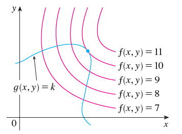

Copyright all rights reserved by Aaron Zheng. This work may not be distributed by anyone without the express consent of the author, who is Aaron Zheng.
Introduction:¶
In \(1\)-D and \(2\)-D calculus, the focus was on functions that deals with either \(1\) or \(2\) variables. Using knowledge before, we could model states that depend on either \(1\) or \(2\) variables. A simple example is the vertical position of a ball thrown up into the air with respect to time. Assuming the Newtonian Framework of physics is true, we arrive at the below: \(\(x(t) = -at^2 +v_0t + x_0(t)\)\) \(x(t)\): position, \(a\): acceleration, \(v_0\): initial velocity, \(x_0(t)\): initial position
In the real world, however, any object, states, or results usually depend on more than one variable. For example, the status of the stock market depends on the outlook of the market, the average income levels of investors, trade relations between countries, the population, and much more. On a lighter tone, my energy state/mood can depend on many things as well... how much I talked to my friends, how much sleep I got, how hungry I am, how many lectures I ditched, how many exams I aced, etc.
To model such cases, we introduce the notion of functions of several variables, also called multidimensional functions or multivariable functions which are basically functions that can take on an arbitrary number of variables. From now on, these terms will be used interchangeably
A function of n variables is any function, \(f\) that assigns to every ordered list of \(n\) variables \((x_1,x_2,x_3,\dots,x_n)\) within a specified domain \(D\subset R^n\) , a unique output \(y\). The standard notation is: \(\(y=f(x_1,x_2,x_3,\dots,x_n)\)\)
The goal is to introduce methods and formulae to successfully model and predict certain properties of such functions, in particular, critical points. This includes points of extrema and saddle points. With such methods, we are equipped to understand functions of several variables better.
Limits and Continuity:¶
As we attempt to analyse functions of several variables, it make sense that we redefine the idea of limits and the notion of continuity and differentiability that was obtained from single-variable calculus.
In single-variable calculus, we defined a limit of a function \(y=f(x)\) as \(x\rightarrow a\) as the point in which \(f(x)\) approaches as \(x\) gets infinitesimaly close to \(a\). To be more precise:
Let us define a function \(y=f(x)\) with domain \(D\subset R\), and let \(a\in D\). If we have that for any \(\epsilon > 0\), there exists \(\delta>0\) such that: \(\(|f(x)-K|<\epsilon,Eq1\)\) as long as: \(\(|x-a|<\delta, Eq2\)\) Then we can write the limit of the function \(y=f(x)\) as \(x\rightarrow a\) is \(K\), or alternatively: \(\(\lim_{x \to a} f(x)=K\)\) In essense, this thinking can be elevated to the multidimensional framework. What we are trying to do is essentially the same, evaluate a multidimensional function \(f\) around points infinitesimaly close to, but not at, a certain point \(P\) on \(f\)'s domain. However, to do so we need a new idea for distance, otherwise the idea of infinitesimaly close becomes inconcrete.
The \(n\)-dimensional equivalent for the distance formula of two points \((x_{11}, x_{21},x_{n1}),(x_{12}, x_{22},x_{n2})\) is given by: \(\(d=\sqrt{(\Delta x_1)^2+(\Delta x_2)^2+(\Delta x_3)^2+\dots + (\Delta x_n)^2}\)\) assuming \(\Delta x_k = |x_{k2}-x_{k1}|\)
Taking this idea forward, we define the limits of multidimensional functions using a slightly altered version of Eq1 and Eq2.
Multivariable Limit: Let us define a function \(y=f(x_1,x_2,x_3,\dots,x_n)\) with domain \(D\subset R^n\), and let \((k_1,k_2,k_3,\dots,k_n) \in D\). If we have that for any \(\epsilon > 0\), there exists \(\delta>0\) such that: \(\(|f(x_1,x_2,\dots,x_n)-K|<\epsilon\)\) as long as: \(\(\sqrt{(x_1-k_1)^2+(x_2-k_2)^2+(x_3-k_3)^2+\dots + (x_n-k_n)^2}<\delta\)\) Then we can write the limit of the function \(y=f(x_1,x_2,x_3,\dots,x_n)\) as \((x_1,x_2,\dots,x_n) \rightarrow (k_1,k_2,k_3,\dots,k_n)\) is \(K\).
With limits defined, we define continuity of a multidimensional function as follows:
Multivariable Continuity: If for a function \(y=f(x_1,x_2,x_3,\dots,x_n)\) defined on domain \(D\) we have: \(\(\lim_{(x_1,x_2,\dots,x_n) \rightarrow (k_1,k_2,k_3,\dots,k_n)}f(x_1,x_2,x_3,\dots,x_n) =f(k_1,k_2,k_3,\dots,k_n)\)\) given a point \((k_1,k_2,k_3,\dots,k_n)\in D\), then we have that the function \(f\) is continuous on point \((k_1,k_2,k_3,\dots,k_n)\).
Unfortunately, unlike the 1D equivalent, there is no easy way to prove continuity of a multivariable function, since there are infinite vector directions to approach any given point of a multivariable function.
Partial Derivatives:¶
With continuity established, it make sense that the next step should be attempting to find derivatives. However, just as discussed above, unlike in 1D, as opposed to only two, there are many directions to which a function can intersect a point in multidimensional space.
The workaround is introducing direction to the calculation of derivatives. Now, rather than just blindly calculating derivative, we are now calculating the derivative(i.e. rate of change) of a given function \(y=f(x_1,x_2,\dots,x_n)\) at a specific direction in \(n\) -dimensional space, represented as \(\vec{v} = (k_1,k_2,\dots,k_n)\). (Note: \(|\vec{v}|\) is irrelevant, as long as \(|\vec{v}|\neq 0\))
 (https://raw.githubusercontent.com/mbernste/mbernste.github.io/master/images/partial_derivative.png)
(https://raw.githubusercontent.com/mbernste/mbernste.github.io/master/images/partial_derivative.png)
Now lets go back to the 2D variant. Let us have \(z=f(x,y)\) be the multidimensional function we are concerned with.
To put the above definition in more formal terms, we are looking at \(\frac{df(x,y)}{d(x,y)}\) at a certain point \((a,b)\), where the infinitesimal change in \((x,y)\) is in the direction of some \(\vec{v} = (k_1,k_2)\).
In particular, for the case of function \(f\), there are two directions to calculate derivative we are most interested in, \((0,1)\) and \((1,0)\). This is because these two directions represent the scenario in which the slope(derivative) of the function \(f\) is dependent on only one variable, the \(y\) and \(x\), respectively. In essence, for the direction \((0,1)\), the derivative of \(f\) is irrelevant to the value of \(x\), and likewise for direction \((1,0)\). When solving for partial of \(f\) with respect to a variable, we will differentiate \(f\) normally with respect to that variable, except we ==set all other variables as constant. ==
Partials: For the 2D multidimensional function \(z=f(x,y)\), we denote: - \(f_x(x,y)\) as the partial derivative of \(f(x,y)\) in direction \((1,0)\) - \(f_y(x,y)\) as the partial derivative of \(f(x,y)\) in direction \((0,1)\)
To extend the definition, we have for 3D multidimensional functions \(w=f(x,y,z)\), we denote: - \(f_x(x,y,z)\) as the partial derivative of \(f(x,y,z)\) in direction \((1,0,0)\) - \(f_y(x,y,z)\) as the partial derivative of \(f(x,y,z)\) in direction \((0,1,0)\) - \(f_z(x,y,z)\) as the partial derivative of \(f(x,y,z)\) in direction \((0,0,1)\)
Second-order partial derivatives For the 2D multidimensional function \(z=f(x,y)\), we denote: - \(f_{xy}(x,y)\) as the partial derivative of \(f_y(x,y)\) in direction \((1,0)\) - \(f_{yy}(x,y)\) as the partial derivative of \(f_y(x,y)\) in direction \((0,1)\) - \(f_{xx}(x,y)\) as the partial derivative of \(f_x(x,y)\) in direction \((1,0)\)
Differentiability: A \(2\)-dimensional function \(f(x,y)\) is differentiable at \((a,b)\) if for any point \((x,y)\) that approaches \((a,b)\) , we can write the difference between \(f(x,y\)) and \(f(a,b)\) as a linear combination of the differences \((x-a),(y-b)\). In particular:
If for a \(2\)-dimensional function \(z=f(x,y)\) with domain \(D\), we can write: \(\(f(x,y)-f(a,b) \approx f_x(a,b)(x-a)+f_y(a,b)(y-b)\)\) as \((x-a)\rightarrow 0, (y-b)\rightarrow 0\) at some point \((a,b)\), accurate to infinitesimals of higher order with respect to \((x-a)\) and \((y-b)\), we have that \(f(x,y)\) is differentiable at \((a,b)\).
Specifically, we must be able to write: \(\(f(x,y)-f(a,b) = f_x(a,b)(x-a)+f_y(a,b)(y-b) + \epsilon_1(x-a) + \epsilon_2(y-b)\)\) where, as \((x-a)\rightarrow 0, (y-b)\rightarrow 0\), we have \((\epsilon_1 \rightarrow 0), (\epsilon_2 \rightarrow 0)\)
Tangent Planes:¶
Now, we will attempt to make the idea of differentiation more visual by introducing tangents.
In the 1D equivalent, the tangent to a function \(y=f(x)\) with domain \(D\) at a point \(x=x_0\), where \(x_0\in D\), is a straight line that intersects the function through the point \((x_0,f(x_0))\) at only that point.
However, in the 2D equivalent, the tangent to a function \(z=f(x,y)\) with domain \(D\) at a point \((x,y)=(x_0,y_0)\), where \((x_0,y_0)\in D\), is a plane that intersects the function through the point \((x_0,y_0,f(x_0,y_0))\) at only that point.
 https://i.stack.imgur.com/hPosy.png
https://i.stack.imgur.com/hPosy.png
To find such a plane, we can use our knowledge of the partial derivatives defined above. Let us assume that such a plane intersecting a point \((x_0,y_0,z_0)\) on the function would have the equation: \(\(A(x-x_0) + B(y-y_0)+C(z-z_0) = 0\)\) Rearranging, we have: \(\((z-z_0) = -\frac{A}{C}(x-x_0) + (-\frac{B}{C})(y-y_0)\)\) Notice that, by setting \(x=x_0\) and \(y=y_0\), we have that: \(\(z-z_0=(-\frac{B}{C})(y-y_0)\)\) and: \(\(z-z_0=(-\frac{A}{C})(x-x_0)\)\) Respectively.
This means that the constant expressions \(-\frac{B}{C},-\frac{A}{C}\) must be equal to the partial derivatives in the \(y\) and \(x\) direction, or \(f_y(x,y), f_x(x,y)\), respectively.
Hence, for any 2D function \(z=f(x,y)\) , we can write that the tangent plane at any point \((x_0,y_0,z_0)\) on the function can be written as: \(\((z-z_0) = f_x(x_0,y_0)\cdot (x-x_0) + f_y(x_0,y_0)\cdot(y-y_0)\)\)
To extend this idea, in general, for an \(n\)-dimensional function \(y=f(x_1,x_2,\dots,x_n)\), we have that the tangent plane at any point \((k_1,k_2,\dots,k_n,f(k_1,k_2,\dots,k_n))\) can be represented as:
\(y-f(k_1,k_2,\dots,k_n)\) \(= f_{k1}(x_1,x_2,\dots,x_n)(x_1-k_1) + f_{k2}(x_1,x_2,\dots,x_n)(x_2-k_2)\) \(+ \dots + f_{kn}(x_1,x_2,\dots,x_n)(x_n-k_n)\)
Directional Derivatives:¶
Extending on the concept of derivatives in functions of more than one variable, we introduce the idea of directional derivatives, and the way to calculate them.
Essentially the directional derivative of any function \(z=f(x,y)\) at point \((x_0,y_0)\) in \(f\)'s domain, in any direction \(\vec{u} = (a,b)\) is basically the value of limit: \(\(\lim_{h\rightarrow 0} \frac{f(x_0+ha,y_0+hb)-f(x_0,y_0)}{h\cdot|u|}\)\) The function of directional derivative of \(f(x,y)\) is \(D_uf(x,y)\) With this concept defined, we can now find the derivatives of functions along any direction of travel represented by a vector \(\vec{u}\).
In fact, we can write the directional derivative based on the partial derivatives calculated above. For any direction represented by unit vector \(\vec{u} = (a,b)\), we have that: \(\(D_uf(x,y) = f_x(x,y)a + f_y(x,y)b, Eq3\)\) The reason is that the above limit can be broken down into the sum of two limits, whereby we alter the \(x\) component and keep the \(y\) component fixed in one limit, and then vice versa for the other.
This brings me to the definition of differentiability.
A function \(z=f(x,y)\) is differentiable at a point \(P(x_0,y_0)\) on its domain \(D\) if it is continuous at point \(P\), and has continous partial derivatives with respect to \(x\) and \(y\) at that point \(P\).
Furthermore, we can also write the above Eq3 in another way: \(\(D_uf(x,y) = <f_x(x,y),f_y(x,y)>\cdot <a,b>\)\) Now, since \(|\vec{u}| =|<a,b>|=1\) , we must have that, the maximum and minimum value of the directional derivative is \(+|<f_x(x,y),f_y(x,y)>|\) and \(-|<f_x(x,y),f_y(x,y)>|\) , which is a conclusion literally obtained using the definition of the dot product. The maxima and minima are obtained when the direction of \(<a,b>\) aligns perfectly or in the opposite direction of the magical vector \(<f_x(x,y),f_y(x,y)>\), respectively.
It makes sense, then, to call this special vector something special. Without Loss of generality, we will call the vector \(<f_x(x,y),f_y(x,y)>\) the gradient vector, denoted by the expression \(\nabla f\).
I will reiterate: 1) Maximal directional derivative of any function \(z=f(x,y)\) occurs whenever the direction of travel aligns perfectly(is in the exact same direction as) \(\nabla f\) . 2) Minimal directional derivative of any function \(z=f(x,y)\) occurs whenever the direction of travel aligns perfectly(is in the exact same direction as) \(-\nabla f\) .
Level curves¶
Work in progreses.
Max and Min Values:¶
In general, we define there to be a local maximum in a function \(z=f(x,y)\) at point \(P(x_0,y_0)\) if there exists some \(\epsilon>0\), such that. \(\(f(x,y)<f(x_0,y_0)\)\) as long as the distance between \((x,y)\) and \((x_0,y_0)\) is less than \(\epsilon\).
The local minimum is basically the same except we replace the above equation with: \(\(f(x,y)>f(x_0,y_0)\)\)
Just like the \(1D\) equivalent, we see that, at points of local extrema, the derivatives must be equal to zero. Assuming the function \(f(x,y)\) is continous across its domain, the points that might be points of local extrema are points that satisfy: 1) \(f(x,y)\) is not differentiable at the point 2) \(f_x(x,y)=0,\) and \(f_y(x,y)=0\) .
Specifically, for case (2), we have such a framework for determining the identity of the points.
If for a function \(f(x,y)\) differentiable at point \((x_0,y_0)\) and we have: \(f_x(x_0,y_0)=0,\) and \(f_y(x_0,y_0)=0\) and we have the partial derivatives are themselves differentiable:
Then we define \(D=f_{xx}(x,y)\cdot f_{yy}(x,y) - (f_{xy}(x,y))^2\) . and evaluate it at point \((x_0,y_0)\). If \(D>0\), then we have that \((x_0,y_0)\) is a point of local minimum If \(D<0\), then we have that \((x_0,y_0)\) is a point of local maximum.
Lagrange Multiplier:¶
Lagrange multipliers are ways of solving for the extrema points(that means, maximum and minimum points) of any function \(f(x,y,z)\). However, rather than solving for the local min/max of the function \(f(x,y,z)\), a typical problem Lagrange multipliers solve is a situation where we want to solve for points \((x,y,z)\) such that \(f(x,y,z)\) is an extrema point subject to constraints, like \(g(x,y,z)=k, k\in R\).
Lagrange multipliers say that, to solve for extrema values of function \(f\) relative to constraint \(g(x,y,z)=k, k\in R\), \(\nabla f\) and \(\nabla g\) must point in the same direction.
The reason for this is, given some level set of \(g(x,y,z)\), \(g(x,y,z)=k\), what we want is to essentially find the \((a,b,c)\) on this level set such that \(f(a,b,c)\) is maximal or minimal.
To simplify the analysis and the explanations, we will now stick with \(2D\) functions.  (Calculus Early Transcendentals, James Stewart)
Above we illustrate an example of trying to find the maximum of some function \(f(x,y)\) relative to a constraint \(g(x,y)=k\).
We see that, if the level curves of \(f(x,y)\) and \(g(x,y)\) are not tangent to each other, then the value of \(f(x,y)\) can be maximised further, by traveling along the level sets of \(f(x,y)\). However, when the level curves are tangent to each other, then there is no possibility of increasing the value of \(f(x,y)\) anymore. This occurs at exactly the point where: \(\(\nabla f = \lambda \nabla g, \lambda \in R\)\) We call \(\lambda\) the lagrange multiplier.
The same idea can be extended to multiple constraint curves. If our goal is to maximise a 3D function \(f(x,y,z)\) with respect to two constraints, \(g(x,y,z) = k, h(x,y,z)=m\), the potential points of extrema are represented by the set of points \((x,y,z)\) where: \(\(\nabla f = \lambda \nabla g + \mu \nabla h, (\lambda, \mu)\in R\)\)